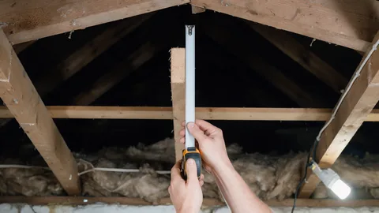
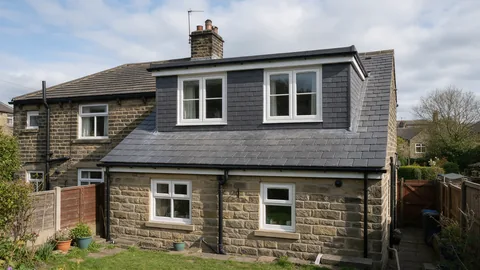

Home / Advice / Planning and building regulations for lofts, in plain words
Advice Sample
Planning and building regulations for lofts, in plain words.
Two different things that people run together, and what each one is actually asking of your loft. In the order it happens rather than the order the forms come in.
They are two different things
Planning permission is about the outside: what the house looks like, what it does to the street and what it does to the neighbours. Building regulations are about whether the thing you have built is safe to use and warm enough to live in.
You can need both, or only one, and it is nearly always only one. Every loft conversion needs building regulations approval. No exceptions, no small jobs, nothing that slips under it. A good number of loft conversions do not need planning permission, because they fall under permitted development.
Planning: what usually makes it unnecessary
Permitted development is a set of rights every house starts with that let you do certain things without a full application. Rear dormers and rooflight conversions on an ordinary house often sit inside those rights, with limits on volume, on how close to the eaves and the ridge you can come, and on what you can do to the slope facing the road.
What takes those rights away, and these are the common ones rather than all of them: the property is a flat or a maisonette rather than a house, the rights have already been used up by a previous extension, the house is in a conservation area, it is listed, the estate has an article 4 direction on it, or the work is on the roof slope facing a highway.
Even where you do not need permission, it is worth applying for a lawful development certificate, which is the council confirming in writing that you did not need it. It costs a fee and it is the piece of paper a buyer's solicitor asks for in ten years.
Building regulations: what they are actually asking
Four things, roughly, and they are all sensible once somebody explains them.
Will the floor hold a room up? Your existing ceiling joists hold up a ceiling. A new floor goes in that carries people and furniture and lands on the walls or on steel beams, and a structural engineer sizes it. There is a drawing of the build up below.
Is the roof still held up? Cutting a hole in a roof for a dormer, or taking a hip off, changes what is carrying what. Whatever replaces it gets designed rather than guessed.
Can you get out? The staircase is the way out, so the route from the loft to the front door has to hold together long enough to use. In practice that usually means the doors onto the stairs upgraded, mains linked smoke alarms on every floor, and an escape window in the loft room of a size and position set out in the regulations. This is the part people are most surprised by and it is the part that is least negotiable.
Is it warm, ventilated and safe to walk about in? Insulation to a standard, the roof able to breathe above it, a staircase with a rise and a going within the allowed range, a handrail, and guarding at the top.
The order it happens in
Survey, then drawings, then a structural engineer, then the building control application, then the planning check or application if one is needed, then work starts. Building control comes out at stages during the job rather than at the end, and the two that matter are before the floor is covered up and before the insulation is hidden behind plasterboard.
At the end you get a completion certificate. Keep it somewhere you can find it, because it is the difference between a bedroom and a loft with a bed in it when you come to sell.
Party walls
Separate again from both of the above. If you live in a semi or a terrace and the work touches or is built off the shared wall, which on a loft conversion it almost always is, the Party Wall Act applies and notices get served on the neighbour. It is a process with timescales rather than a veto.
The practical advice has nothing to do with the law: knock on and tell them before the letter lands. Scaffolding up the side of a house for weeks goes a great deal better that way.
Written for a demo. This is general trade knowledge, not advice on your house. Raftergill Lofts is a fictional firm, so there is nobody to ring about it. The Clockwork number in the bar at the top is real.
 Generated photo
Generated photoGenerated for this demo. Not a photograph of a real job.
In section
Which way the flight climbs.
The clearance a staircase needs over the steps runs parallel to the flight, which is why the slope decides this rather than the ridge height.
Same flight · same rise · wrong direction
You cannot stand up at the top of it
Run the flight so it climbs towards the eaves and the roof comes down to meet you exactly where you are standing tallest. The shaded wedge is where the slope cuts below the line the flight needs over the steps. No amount of ridge height fixes it, because at that end of the room there is no ridge above you. This is the commonest reason a loft that measures fine still will not work as drawn.
Same flight · same rise · comes up in the middle
It arrives where the roof is highest
Same flight, turned round, so you come up into the middle of the room where there is air above your head. That is usually the answer, and it is why the stairs get drawn before anything else: where they land decides where the bed goes, where the shower can go and whether the landing below keeps its window. Sometimes it means taking a slice off a bedroom rather than off the landing, and that is a conversation rather than a surprise.
In section
What the new floor is made of.
Five layers from the top down, and your old ceiling left exactly where it is at the bottom.
Questions
Asked about this.
Can I do it without building regulations approval?
You can physically build it and you will regret it. An unapproved conversion is not a bedroom as far as a surveyor or a mortgage lender is concerned, it can hold up a sale for months, and a regularisation application afterwards means opening work up so it can be inspected.
It also means nobody independent has looked at whether the floor is strong enough or whether you could get out in a fire, which are not paperwork questions.
How long does the paperwork take?
Weeks rather than months on a straightforward job, and it runs alongside the drawings rather than after them. A full planning application, where one is needed, has a statutory period of its own and that is the part worth starting early.
What delays jobs is almost never the council. It is waiting for a structural engineer, or a change of mind at the drawing stage, both of which are easier to absorb before anybody has booked a scaffold.
Do I need to tell my insurer and my mortgage lender?
Your insurer, yes, before the work starts, because the cover on a house with its roof open is a different thing. It is a phone call and it is rarely a problem.
Your lender generally does not need to approve ordinary permitted development work but it is worth a look at your terms, and if the house is leasehold rather than freehold then the lease will almost certainly have something to say about altering the structure. Check that one early, because it can stop a job dead.
More
The other two.

Generated photoIs your loft high enough? How to measure
Where to put the tape, what to measure to, and why the number at the ridge is not the number that decides it. Ten minutes with a torch tells you most of what you need.

Generated photoDormer or rooflight: which conversion
The same loft drawn both ways, so you can see what the box on the back actually buys you and when leaving the roof alone is the better answer.
Want somebody to measure it properly?
Tell us the house and your postcode. Half an hour with a tape answers what no article can.